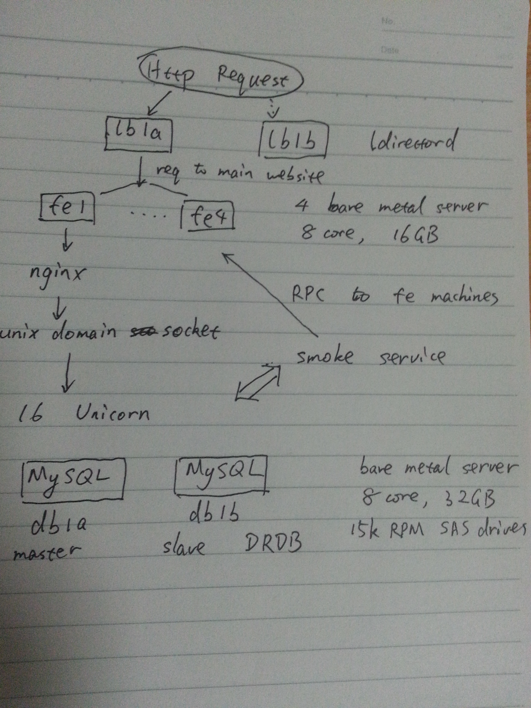

GitHub’s blog article:
How We Made GitHub Fast
Reading GitHub’s blog article “How We made GitHub Fast”,
unfortunately, the article does not provide any graph. So I draw
something on paper (ugly though), to illustrate GitHub’s architecture.
The following image shows how an HTTP request is processed.

At the begining, the request reaches the load balancer, lb1a, and
lb1b. They are ldirectord processes, and lb1b is the backup for lb1a.
If the request is to the main website, it is forwarwed to on of the
front end servers: fe1 to fe4. These are 4 bare metal servers with 8
core and 16GB memroy. Each of them runs an nginx that proxies the
request to 16 Unicorn (a web server written in Ruby) through unix
domain socket.
Underlying are two MySQL database, db1a, and db1b, being the master
and slave respectively. The database machines are 8 core, 32GB bare
metal server with 15k RPM SAS drivers. The master/slave is done
through DRDB.
If the request needs to access Git repository, Unicorn servers make
Grit calls to retrieve the information. This is done by replacing
Grit::Git with a stub that makes RPC calls to the Smoke service. And
the next pictures shows a finer grain illustration of this part.
There is an HA Proxy which forward the request to 4 ProxyMachine
instances on one front-end. ProxyMachine is a content aware (layer 7)
TCP routing service which again is written in Ruby. It’s amazing to me
that GitHub uses Ruby everywhere and gains exellent performance and is
able to host so many developers around the world.
The route (which user id routes to which file server) is stored in
Redis (running on database servers), and is looked up with a library
called Chimney . Then the request gets to one of the file servers,
fs1a, fs1b through fs4a and fs4b. The a server’s are masters and b
servers are slaves. On each file server there’s a HA Proxy and two
Ernie RPC which perform Grit call (Ruby API to access Git repository).
The above flow is what happens when cache is not in the picture. Each
of the slave file servers (e.g. fs1b, etc.) hosts a memcached, since
the slaves are unused normally.